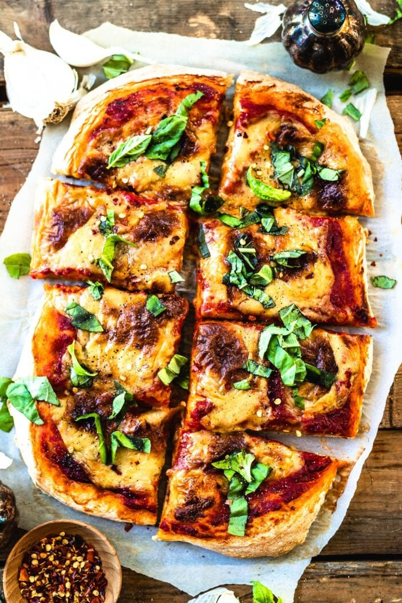

Back
Pizza

Description
Today I am sharing a truly simple and delicious homemade vegan margherita pizza recipe with you! This recipe is made from scratch, everything from the vegan pizza dough to the marinara sauce, and even the vegan mozzarella cheese!
This oven-baked pizza is the ultimate vegan twist on a classic margherita pizza. The homemade pizza dough is yeasty and bubbly with a crispy exterior and soft inside. Slathered with a bright and lush tomato sauce and topped with my melty and stringy vegan mozzarella, finished with freshly chopped basil.
Ingredients
Homemade Pizza Dough
- 3 3/4 cups all purpose flour plus 1/2 to 1 cup more
- 1 1/2 cups filtered water
- 2 teaspoons sea salt, finely ground
- 1/4 teaspoon active dry yeast
Sauce and Toppings
- 1 cup tomato sauce
- 1 tbsp tomato paste
- 2 cloves garlic, finely chopped
- Pinch sea salt
- 1 cup homemade vegan mozzarella or store-bought
- 1/2 cup fresh basil, finely chopped
Instructions
Pizza Dough
- In a large mixing bowl, combine flour, salt, and yeast. Gradually add 1.5 cups water while stirring with a wooden spoon. Stir until well incorporated. Knead dough gently with your hands to form a dough ball. Add more flour if needed until it's no longer sticky to the touch. It should be plush and dough-like. ( I used about 1/2 cup more flour).
Transfer dough to a large clean bowl. Cover with reusable wrap and let dough rise at room temperature, in a draft-free area, until its surface is covered with tiny bubbles and the dough has doubled in size, approx. 6-10 hours. (I like to do this overnight).
If not using right away, dust dough ball with flour and cover in reusable wrap. Store in fridge and bring back to room temperature before use.
- Transfer dough to a floured work surface and gently shape into a rough rectangle. Divide into two equal portions and mold each gently into a ball.
- Preheat oven to 450F/230C. Place dough balls each on a rimmed baking sheet and flatten with hands, until it covers most of the sheet. (If the dough springs back, let it rest a few minutes, then try again).
Sauce and Toppings
- In a smaller mixing bowl combine tomato sauce, tomato paste, garlic and sea salt. Slather tomato sauce onto pizza dough and top each with vegan mozzarella.
- Bake pizzas for 15 to 20 minutes, or until pizza crust is golden and bubbly, and the bottom is cooked through (golden and crispy. Check by lifting up the pizza with a spatula and peeking underneath). Sprinkle pizza with fresh basil and slice into 8 pieces.